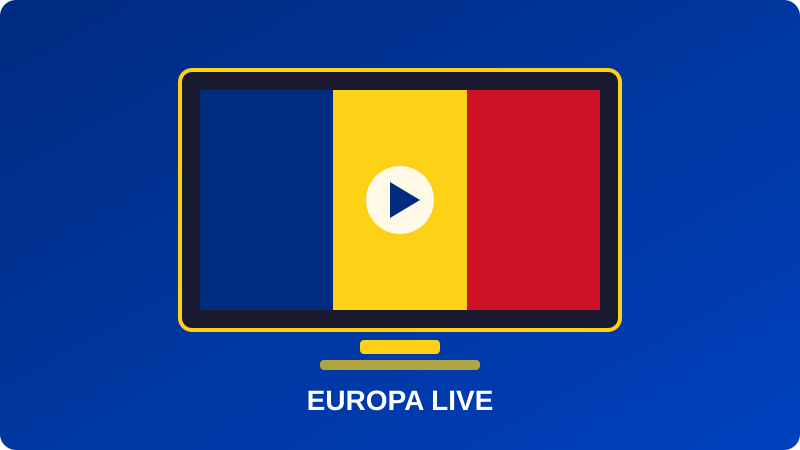
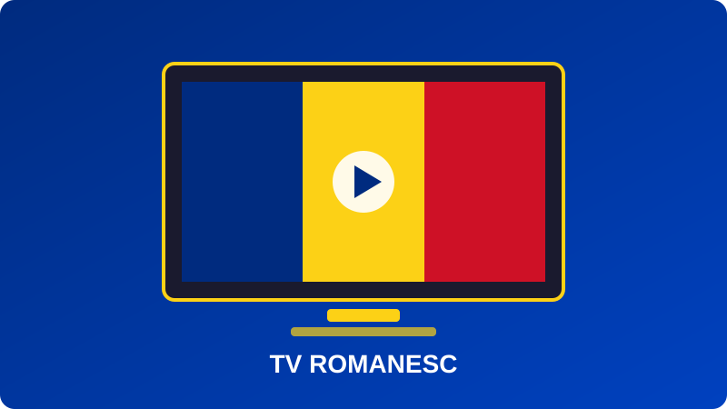

Daca locuiesti in afara tarii si vrei sa urmaresti tenis, ciclism sau sporturi de iarna, probabil ai cautat deja eurosport iptv. Eurosport este unul dintre cele mai importante canale sport din Europa, iar cu un serviciu IPTV bun il poti vedea pe televizor, telefon sau tableta, fara parabola si fara instalare complicata.
In acest ghid explicam ce inseamna eurosport iptv, ce canale poti primi, ce viteza de internet ai nevoie, cum configurezi totul pas cu pas si cum eviti listele gratuite nesigure. Totul este scris pentru romani, cu accent pe diaspora, pe canale romanesti si pe suport in limba ta.
La final ai si un test gratuit prin WhatsApp, ca sa verifici calitatea inainte de abonare. Daca esti la inceput, citeste mai intai iptv romania, apoi revino aici.

Cuprins
- Ce este eurosport iptv?
- Ce canale sport poti urmari
- Avantajele fata de cablu si satelit
- Pe ce dispozitive functioneaza
- Cum configurezi pas cu pas
- Ce internet ai nevoie pentru sport live
- Liste gratuite sau abonament verificat
- De ce sa alegi Romania IPTV
- Ce sporturi poti urmari pe Eurosport
- Eurosport IPTV pentru romanii din diaspora
- Sfaturi pentru o transmisie fara intreruperi
- Greseli frecvente de evitat
- Este legal si sigur?
- Comparatie rapida: cablu, satelit si IPTV
- Intrebari frecvente
- Concluzie
Ce este eurosport iptv?
Cand cauti eurosport iptv, vrei de fapt sa vezi sportul european de top pe televizor, fara parabola si fara contract lung. Eurosport transmite tenis (Grand Slam), ciclism (Turul Frantei, Giro), sporturi de iarna, atletism si multe alte competitii. Prin IPTV, aceste canale ajung la tine prin internet, pe orice ecran.
Cum functioneaza IPTV pentru sport
Semnalul TV este livrat ca flux video prin internet. Ai nevoie de o aplicatie de player, de datele de acces primite de la furnizor si de o conexiune stabila. Nu depinzi de antena, de cablu sau de zona in care locuiesti.
De ce il cauta romanii
Mai ales romanii din diaspora vor sa vada Eurosport in limba romana, alaturi de Pro TV, Antena 1 si Digi Sport. Cu Romania IPTV primesti tot intr-un singur abonament. Daca vrei o privire de ansamblu, citeste si ghidul iptv romania.
Ce canale sport poti urmari
Un pachet bun de eurosport iptv include mai mult decat un singur canal. Lista exacta difera de la pachet la pachet, asa ca ceri varianta actuala pe WhatsApp.
Eurosport 1 si Eurosport 2
Aici vezi tenis, ciclism, snooker, sporturi de iarna si evenimente olimpice. Sunt printre cele mai cautate canale sport din Europa.
Canale sport romanesti
Digi Sport, Prima Sport si alte canale locale completeaza oferta, cu fotbal intern, handbal, baschet si emisiuni de analiza. Vezi si espn iptv pentru alternativa americana.
Canale generaliste si stiri
Pe langa sport, ai filme, seriale, desene si stiri in limba romana, toate in acelasi abonament.
Avantajele fata de cablu si satelit
Cablul si satelitul au pachete rigide, taxe de instalare si contracte pe 12-24 luni. IPTV schimba regula jocului.
Flexibilitate si pret
Platesti doar abonamentul, fara echipament scump. Poti opri sau reinnoi cand vrei.
Mobilitate
Te muti din Germania in Spania sau Italia? Iei contul cu tine. Despre acoperirea in Europa, vezi euro iptv.
Calitate HD si 4K
La evenimente sportive conteaza fluiditatea. Cu internet bun, primesti HD stabil si, unde exista, 4K.
Pe ce dispozitive functioneaza
Aceleasi date de acces merg pe mai multe aparate, in limita conexiunilor din abonament.
Smart TV si box Android
Cea mai buna experienta pe ecran mare. Un box Android costa putin si merge bine; vezi android box iptv.
Telefon si tableta
Perfect pentru a urmari o etapa de ciclism in deplasare sau o runda de tenis in pauza de pranz.
Calculator
Folosesti un player compatibil si poti avea meciul pe un monitor in timp ce lucrezi.

Cum configurezi pas cu pas
Configurarea dureaza cateva minute si nu necesita cunostinte tehnice.
- Scrie-ne pe WhatsApp si cere un test.
- Primesti datele de acces si lista de canale.
- Instaleaza o aplicatie de player pe dispozitiv.
- Introdu datele si asteapta incarcarea listei.
- Alege Eurosport si porneste transmisia.
Ghid EPG
Pentru programul emisiunilor, activeaza ghidul electronic. Detalii in articolul epg iptv.
Setari recomandate
Foloseste cablu de retea unde poti, ruleaza player-ul pe cea mai recenta versiune si evita VPN-ul daca nu este necesar.
Ce internet ai nevoie pentru sport live
Sportul live cere mai multa stabilitate decat filmele, pentru ca nu poti reda o secventa pierduta.
| Calitate | Viteza minima | Recomandare |
|---|---|---|
| SD | 5 Mbps | Telefon |
| HD | 10 Mbps | Smart TV |
| 4K | 25 Mbps | Cablu de retea |
Probleme frecvente
Imaginea sacadata vine aproape mereu de la Wi-Fi slab sau de la retea aglomerata. Un router bun si cablu rezolva mare parte din ele.
Liste gratuite sau abonament verificat
Multe site-uri promit liste eurosport iptv gratis, dar acestea cad des, au canale false si pot contine reclame periculoase.
Ce ofera un furnizor serios
Suport in limba romana, lista clara de canale, stabilitate si test gratuit. Daca vrei sa compari optiuni, uita-te si la greek iptv sau tilaa iptv, apoi alege ce se potriveste nevoilor tale.
De ce sa alegi Romania IPTV
Romania IPTV se adreseaza romanilor din tara si din diaspora, cu canale romanesti, filme, desene si sport intr-un singur loc.
Suport in romana
Echipa raspunde pe WhatsApp si te ajuta cu configurarea pe orice dispozitiv.
Test fara risc
Verifici calitatea inainte sa platesti, fara card si fara contract. Mai multe ghiduri gasesti in canale iptv romania si emby iptv.
Ce sporturi poti urmari pe Eurosport
Un abonament eurosport iptv aduce in casa o paleta larga de competitii, intr-un singur loc. Iata cele mai populare categorii pentru publicul roman.
Tenis si Grand Slam
Australian Open, Roland Garros, Wimbledon si US Open sunt cele patru turnee de Grand Slam, iar Eurosport este casa lor in multe tari europene. Cu IPTV poti schimba usor intre terenuri, fara sa pierzi un game.
Ciclism si curse pe etape
Turul Frantei, Giro d'Italia si Vuelta sunt transmise pe durata a trei saptamani. Etapele lungi se urmaresc excelent pe tableta sau pe televizor, iar ghidul EPG te ajuta sa vezi exact cand incepe finalul.
Sporturi de iarna si atletism
Schi alpin, biatlon, sarituri cu schiurile, dar si campionate de atletism sau natatie. Pentru multi romani din diaspora, sunt singurele ocazii sa vada aceste sporturi in limba materna.
Olimpiade si evenimente speciale
La Jocurile Olimpice, Eurosport ofera ore intregi de transmisie. Un serviciu stabil conteaza enorm in aceste zile, cand multi utilizatori se conecteaza simultan.
Eurosport IPTV pentru romanii din diaspora
Peste patru milioane de romani traiesc in afara tarii, in Italia, Spania, Germania, Marea Britanie, Belgia sau Franta. Pentru ei, televiziunea romaneasca inseamna legatura cu acasa. Sportul ocupa un loc special: o finala de tenis sau o etapa de ciclism se vad mai bine in familie, pe ecranul mare din sufragerie.
Comentariu in limba romana
Una dintre cele mai mari probleme ale romanilor plecati este ca transmisiile locale vin in alta limba. Cu un pachet care include canale din Romania, comentariul ramane in romana, iar emisiunile de analiza completeaza experienta.
Aceleasi canale in orice tara
Nu conteaza daca esti in Madrid, Torino sau Londra. Contul functioneaza oriunde ai internet, iar tu nu mai ai nevoie de abonamente locale scumpe. Pentru o imagine mai larga a ofertei europene, citeste si best iptv europe sau iptv europe.
Familie si copii
Pe langa sport, ai desene animate, filme si seriale romanesti. Un singur abonament acopera toate gusturile din casa, de la bunici la copii.
Sfaturi pentru o transmisie fara intreruperi
Chiar si cel mai bun serviciu depinde de reteaua ta. Cu cateva ajustari simple eviti majoritatea problemelor care apar la evenimentele mari.
Foloseste cablu in loc de Wi-Fi
Un cablu Ethernet scoate latenta si pierderile de pachete. Daca televizorul este departe de router, un adaptor powerline poate fi o solutie ieftina.
Inchide aplicatiile care consuma banda
Descarcarile mari, actualizarile automate si alte fluxuri video pot ocupa banda de care are nevoie meciul. Opreste-le inainte de eveniment.
Reporneste dispozitivul si routerul
O repornire simpla, o data pe saptamana, elibereaza memoria si reconecteaza aparatul la cel mai bun canal Wi-Fi disponibil.
Actualizeaza aplicatia player
Versiunile vechi pot avea probleme de compatibilitate sau de decodare. Verifica periodic magazinul de aplicatii si instaleaza actualizarile.
Contacteaza suportul rapid
Daca un canal nu porneste, scrie imediat pe WhatsApp. Echipa verifica lista, iti trimite o sursa alternativa si te ghideaza pas cu pas, in limba romana.
Greseli frecvente de evitat
Multi utilizatori noi fac aceleasi greseli la inceput. Le poti evita usor daca stii la ce sa fii atent.
- Alegi dupa cel mai mic pret. Ofertele extrem de ieftine ascund adesea instabilitate, canale lipsa sau lipsa suportului.
- Nu ceri test inainte. Un test de cateva ore iti arata calitatea reala la ora de varf.
- Folosesti internet prea lent. Sub 10 Mbps, sportul live in HD devine frustrant.
- Instalezi aplicatii necunoscute. Foloseste doar playere cunoscute din magazinele oficiale.
- Partajezi datele de acces. Contul are un numar limitat de conexiuni, iar partajarea duce la blocaje.
Este legal si sigur?
Tehnologia IPTV in sine este legala: ea inseamna doar livrarea televiziunii prin internet. Legalitatea depinde de furnizor si de drepturile de difuzare din tara ta. De aceea este important sa alegi un serviciu serios, cu comunicare clara, si sa eviti listele aparute peste noapte pe forumuri sau grupuri.
Din punct de vedere al sigurantei, nu transmite niciodata date bancare in afara canalelor oficiale si nu descarca fisiere suspecte. Un furnizor de incredere nu iti cere permisiuni ciudate si nu te trimite pe site-uri necunoscute.
Comparatie rapida: cablu, satelit si IPTV
Ca sa vezi clar diferentele, uite o comparatie simpla intre cele trei modalitati de a urmari sport si canale romanesti in strainatate.
| Criteriu | Cablu | Satelit | IPTV |
|---|---|---|---|
| Instalare | Tehnician | Parabola | Doar aplicatie |
| Contract | 12-24 luni | 12 luni | Flexibil |
| Mobilitate | Nu | Nu | Da, oriunde |
| Canale romanesti | Putine | Limitat | Lista larga |
Dupa cum se vede, eurosport iptv castiga la flexibilitate si la acces la canalele din Romania. Singura conditie este o conexiune buna la internet, pe care majoritatea caselor din Europa o au deja.
Intrebari frecvente
Ce inseamna eurosport iptv?
Este modul in care vezi canalele Eurosport si alte canale sport prin internet, intr-un serviciu IPTV, fara antena sau parabola.
Pot vedea Eurosport in romana prin IPTV?
Da, daca pachetul include Eurosport 1 si Eurosport 2 din Romania. Verifica lista exacta de canale pe WhatsApp inainte de abonare.
Functioneaza eurosport iptv in afara Romaniei?
Da. Serviciul merge in orice tara din Europa si din lume, cu conexiune stabila la internet. Este ideal pentru diaspora.
Ce viteza de internet am nevoie pentru sport live?
Minimum 10 Mbps pentru HD si 25 Mbps pentru 4K. Pentru meciuri si curse live, recomandam cablu de retea.
Pe ce dispozitive pot urmari Eurosport?
Pe Smart TV, box Android, Fire TV Stick, telefon, tableta si calculator, in limita conexiunilor din abonament.
De ce se blocheaza imaginea la meciuri?
De obicei din cauza internetului slab sau a Wi-Fi-ului aglomerat. Foloseste cablu, inchide alte descarcari si cere ajutor echipei de suport.
Este legal un serviciu IPTV?
Tehnologia IPTV este legala. Alege un furnizor serios si evita listele gratuite si neverificate, care cad des si pot fi riscante.
Exista test gratuit?
Da, poti cere un test pe WhatsApp, fara card si fara contract, ca sa verifici calitatea imaginii inainte de abonament.
Testeaza gratuit sportul si canalele romanesti
Scrie-ne pe WhatsApp si primesti acces de test, fara card si fara contract.
Cere testul pe WhatsAppConcluzie
Pe scurt, eurosport iptv este varianta moderna de a urmari sportul european si televiziunea romaneasca oriunde te afli. Ai nevoie de internet stabil, un dispozitiv compatibil si un furnizor de incredere.
Daca vrei sa incerci, scrie-ne pe WhatsApp si cere un test cu Romania IPTV. Mai multe ghiduri gasesti in blog.